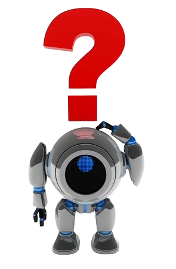

 Robotica is een tak in de wetenschap die zich bezighoudt met het theoretische systeem achter robots en het gebruiken van robots in de praktijk.
Robots zijn geprogrammeerde machines die niet alleen informatie verwerken, maar ook echt fysieke bewegingen uit kunnen voeren. Het unieke aan robots is dat ze niet persé 100% door mensen worden geprogrammeerd, maar dat ze soms gebruik maken van ‘A.I.’ waardoor ze zichzelf ook kunnen ontwikkelen en dingen aan kunnen leren. Het allereerste goed werkende robot ooit is op 1937 gemaakt. Dit was een kraanachtig apparaat dat bewegingen kon maken in 5verschillende assen en had een soort grijphand waarmee die om zijn eigen as kon draaien. Deze robot kon niet veel het werd aangedreven door één elektromotor en hij kon alleen maar houten blokken in een voorgeprogrammeerd patroon leggen, maar tegenwoordig heb je overal robots voor, van een lopende robot hond die je gezelschap geeft tot een robot die allerlei gegevens van de maan haalt. Robotica is tegenwoordig niet te vermijden je vindt ze overal, maar is dit wel goed voor de mensheid?